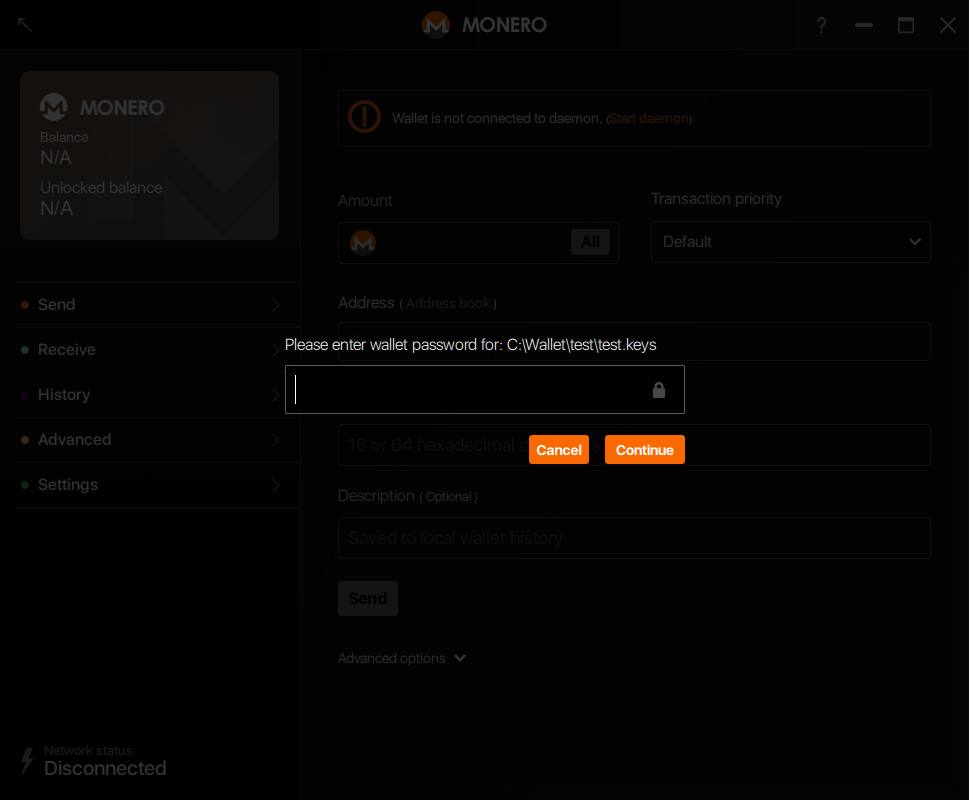
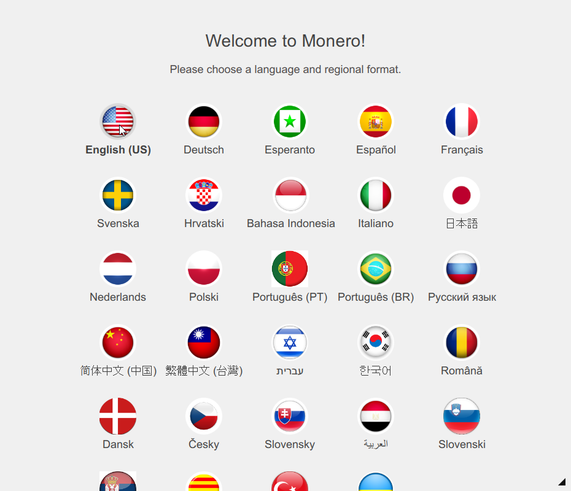
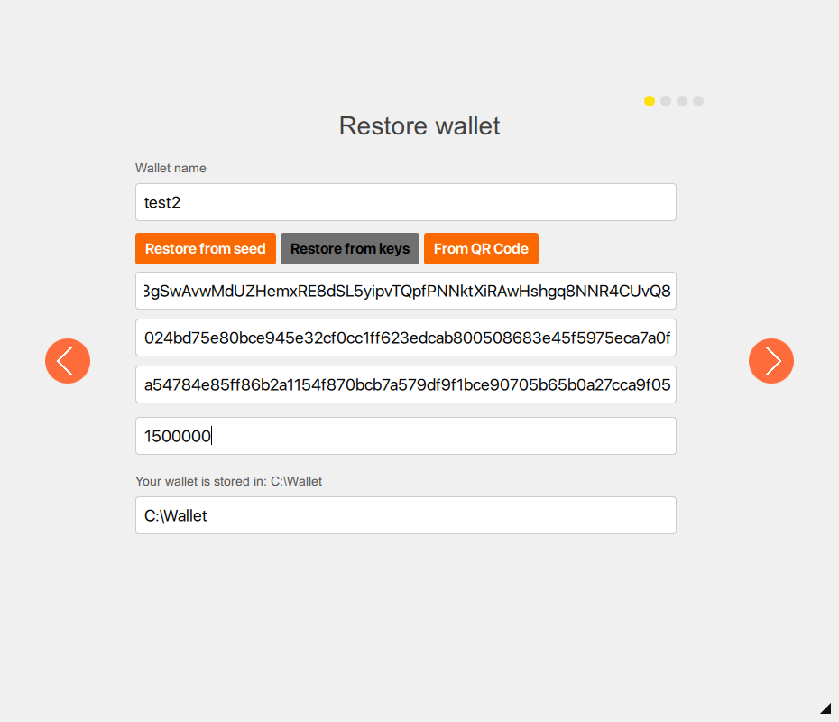
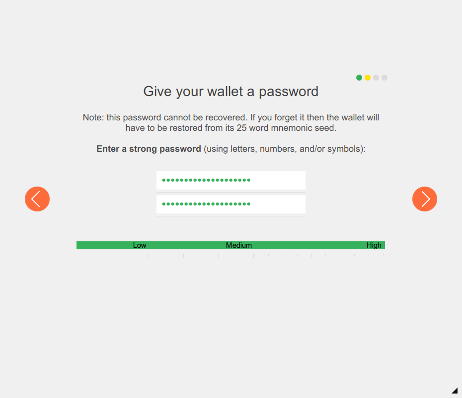
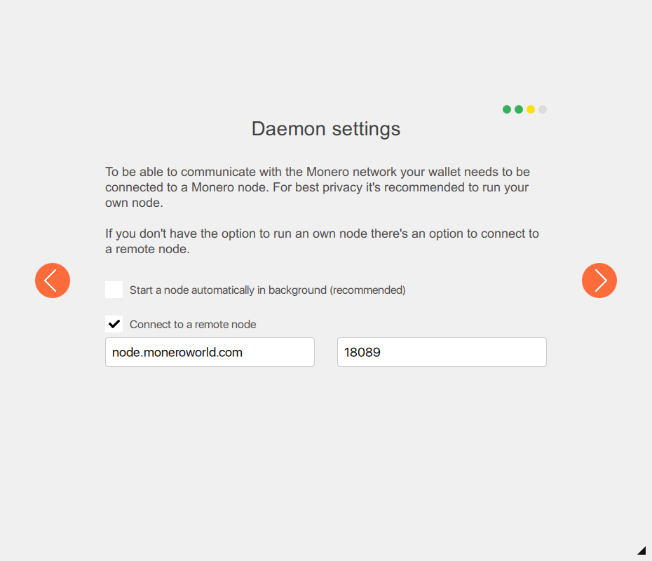
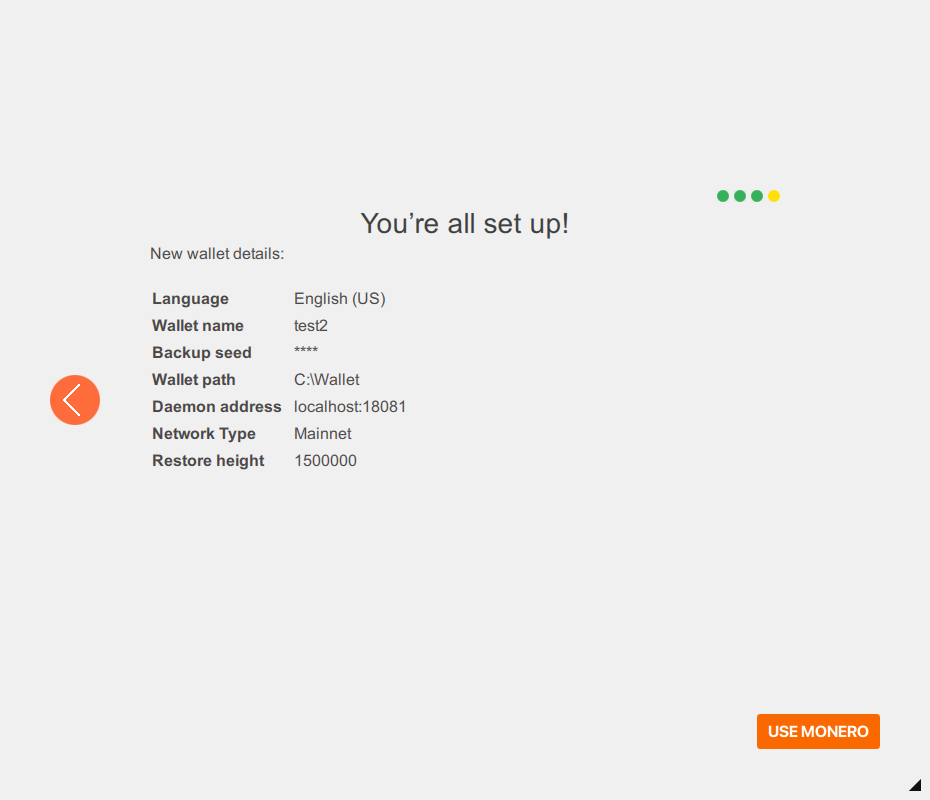

How to restore a wallet from keys
Restoring a wallet from private keys is pretty simple. If you have the necessary information, with this guide you can completely restore your wallet. Note: you do NOT have to have your password to restore from keys.
You need to have 3 pieces of data from your wallet, or your .keys file which holds this info and the password to decrypt it. The 3 wallet components that you need are:
- Address
- Secret Spendkey
- Secret Viewkey
CLI
Then run the wallet command:
./monero-wallet-cli --generate-from-keys New_Wallet_Name.abc
Next, you'll be asked for the Address, the spendkey, the viewkey, and finally the new password for the re-generated wallet.
Running this with the correct parameters will re-generate your wallet files for you and allow you to set a new password.
If you run into any trouble, running ./monero-wallet-cli --help will show you the options available to you at wallet startup. Once you're inside your wallet, running the help command will list the help for the commands available to you within the wallet.
GUI
Launch monero-wallet-gui. If this is the first time you launched it go to the next step, otherwise click Cancel:

Select your appropriate language English(US):

Click on Restore wallet from keys or mnemonic seed:

Select Restore from keys, give your wallet a name & storage location, and complete the Account address (public), View key (private) & Spend key (private). Optionaly, specify a Restore height (optional) to avoid scanning of oldest blocks. Then click the Right arrow:

On the next page, give your wallet a strong password and confirm it before clicking the Right arrow:

Specify your daemon settings and click the Right arrow:

Click on USE MONERO to enjoy your restored wallet:
